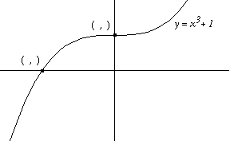
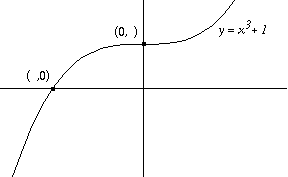
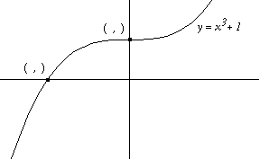
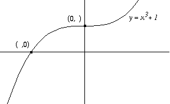
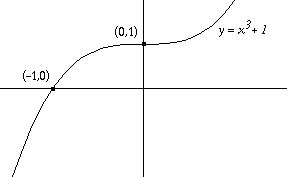
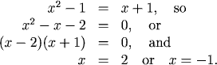
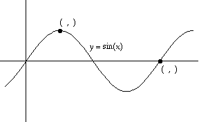
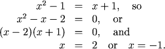
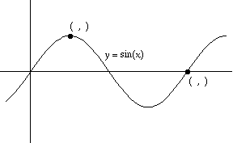

Combining Evaluation, Graphing and Solving
We can use our understanding of functions and our knowledge of the shapes of curves to evaluate some of the key coordinates on graphs.
Intercepts
We usually want to label the intercepts of our graphs when we make a sketch. The y-intercept will have a zero as its first \(x\) coordinate: (0, ), and any \(x\)-intercept will have a zero as its second \(y\) coordinate: ( ,0). To decide on the missing coordinates we can think in the following way:
Intercepts:
| The coordinates of the \(y\)-intercept are | (\(0\),the \(y\)-value corresponding to \(x=0\)) |
| The coordinates of any \(x\)-intercept(s) are | (any \(x\)-value making \(y=0\),\(0\)) |
Examples


Fill in the missing coordinates:

To solve this problem we first fill in what we know without any calculations:

The \(y\)-intercept is
\((0,(0)^3)+1)=(0,1)\)
and the \(x\)-intercept will be
\((solution\ of\ x^3+1=0, 0)\)
The value \(x=-1\) will make \(x^3+1=0\), so the \(x\)-intecept in (-1,0):
\((0,(0)^3)+1)=(0,1)\)
and the \(x\)-intercept will be
\((solution\ of\ x^3+1=0, 0)\)
The value \(x=-1\) will make \(x^3+1=0\), so the \(x\)-intecept in (-1,0):
Intersections
When two graphs intersect, the point of intersection lies on both graphs, so the coordinates of the point of intersection will satisfy both of the equations which led to theses graphs. We need to solve the equations simultaneously, to find the coordinates of the intersection.
Examples





1. Fill in the missing coordinates:
We solve the equations simultaneously by setting them equal to one another:

Thus the \(x\)-coordinates of the two points of intersection are \(x=2\) and \(x=-1\).
To get the corresponding \(y\)-coordinates we use either equation to find \(y(-1)=0\) and \(y(2)=3\). The graphs intersect at \((-1,0)\) and \((2,3)\):
2. Fill in the missing coordinates:

The sine function completes one full cycle between \(x=0\) and \(x=2\pi\), so the right-hand point has coordinates \((2\pi,0)\).
The graph reaches its highest value one quarter of the way through the cycle, at \(x=\frac{\pi}{2}\). Since \(sin(\frac{\pi}{2})=1\), the coordinates of the left-hand point are \((\frac{\pi}{2},1)\):
(See also section 14, especially topic 1, common graphs to memorize and topic 2, key function values, for more information on the sine function.)
Practice
Question 1:
Question 2:
Question 3:
Question 2:
Question 3:
Return to Main